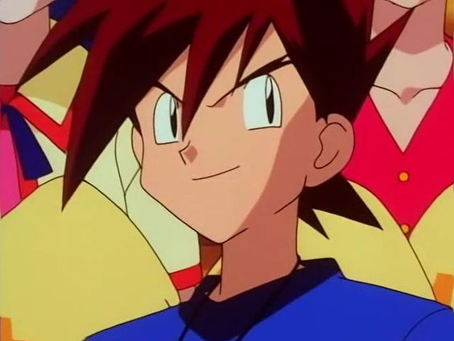
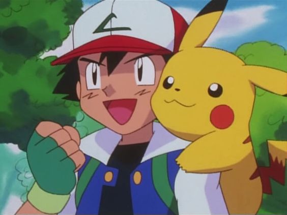
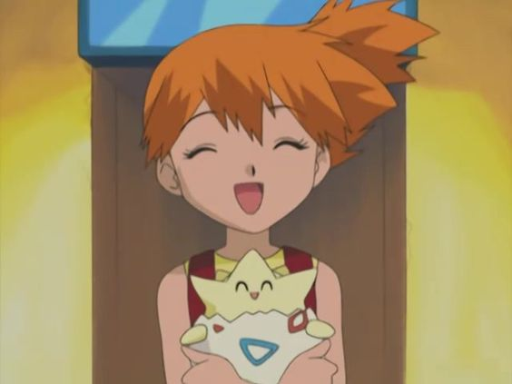
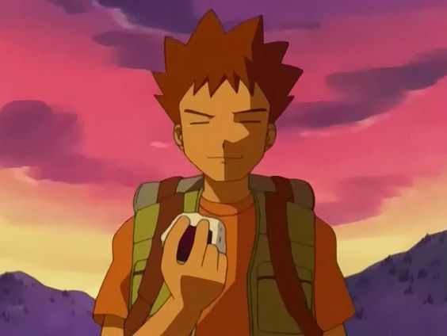

   
La serie sigue las aventuras de un impetuoso y joven entrenador llamado Ash Ketchum, y de Pikachu, su compañero Pokémon, mientras viajan por el mundo Pokémon visitando destinos exóticos, conociendo a montones de personas y Pokémon nuevos e interesantes, y viviendo muchas y emocionantes aventuras.
La serie tiene un gran número de personajes que, en su mayoría, se distinguen por ser entrenadores Pokémon y las especies de Pokémon, ya sean propiedad de los entrenadores o en estado salvaje.
Muchos aspirantes al entrenamiento de Pokémon, han iniciado su viaje con un Pokémon inicial, que en muchos casos son obtenidos por un profesor Pokémon según la región; otros personajes han obtenido su primer Pokémon de diversas formas fuera del método común, luego de esto los entrenadores inician su recorrido por el mundo. Estos núcleos se convierten sucesivamente en las bases para la interacción entre los personajes, donde los entrenadores aprenden más cosas sobre el entrenamiento y conocen la gran variedad de especies de Pokémon que están en todo el mundo.
Los personajes (obviamente humanos) están divididos en distintas tipos de entrenadores y cada uno se dedica a actividades específicas como los coordinadores Pokémon, quienes solo están interesados en las competencias de concursos Pokémon.
Básicamente, la serie recoge muchos aspectos traídos originalmente de los videojuegos y están de acuerdo con la saga actual del anime y la generación presente de videojuegos.
Existen otras características de la serie de anime que reemplaza o se añaden elementos totalmente originales que no provienen de los videojuegos de Pokémon, tales como la comunicación de los Pokémon hacia los entrenadores por medio de la repetición de sílabas de su nombre utilizando diferentes tonos de voz y el número ilimitado de movimientos que un Pokémon que puede usar en batalla a diferencia de los videojuegos en donde un Pokémon solo puede usar hasta 4 ataques máximo y solo pueden aprender un nuevo ataque reemplazando por otro que la criatura ya haya aprendido.